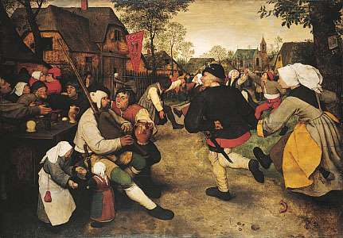

The Art of Dance
Dance, it's not just moving to the music, it's a language, a feeling, an expression, a mood, a way to connect with the entire world and make everyone come together.
Dance is an art that can be expressed anywhere, anytime. No matter if you are poor or rich, you can create art. A good choreographer can make the world stand still for a few minutes.